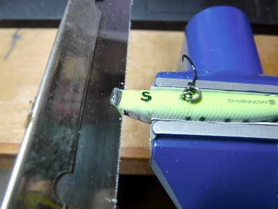
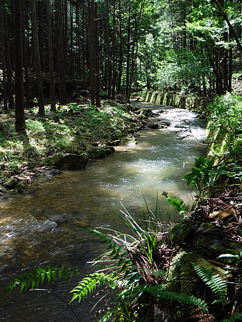
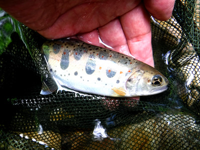
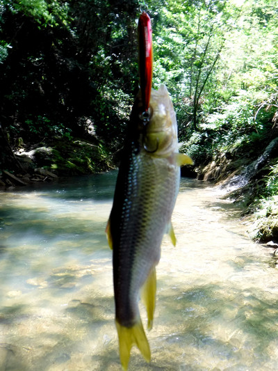
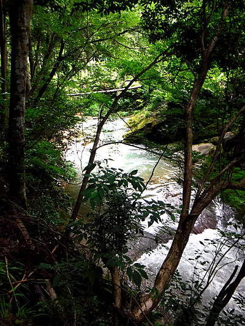
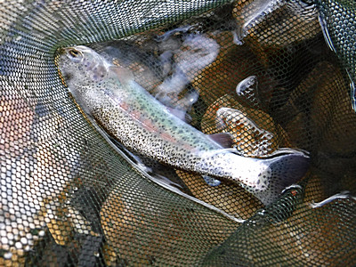

釣行日誌 故郷編
2019/06/16 故郷は遠きにありて.....
明日は30年ぶりに故郷の川を訪れてみようと思い立ち、夜中、机に向かってミノーの折れたリップを修繕する。

早朝、出発前に、目的地の雨量観測所データをチェックして驚く。昨夜こんなに降ったのか！ これは、場所を変えた方が良いのかなぁ？ と思いつつ、カブでいつもの店に行き、レンタカーを借りてきて、FMトランスミッターで音楽プレーヤーを接続しようと試みる。しかし、要領を得ずに結局ケーブルでつなぐ。（笑）
２時間余りのドライブで生れ故郷の町に着き、とある集落の外れまで行ってみると、そこから先は林道が通行止めになっていることに驚く。以前の台風によるものか、至る所に倒木が折り重なっており、徒歩でも進むのに難儀しそうな光景であった。
少し戻って見つけた空き地に車を停め、釣り支度を整え、しばらく倒木を乗り越えながら上流へ歩を進めてゆく。林道から見下ろす渓は頃合いの出水で、何か期待させるものがあった。

あまり上流に行っては沢の規模が小さくなり過ぎて釣りにならないので、適当な場所を見つけ、斜面を慎重に降りてチョットした深みから入渓して釣り下ることにした。
増水した笹濁りの流れにフローティングミノーを投射し、逆引きをゆっくり行う。最初のポイントでは無反応だったが、次の流れ込みで、この川としては実に35年ぶりの一尾が釣れた。パーマークと朱点の美しい野生のアマゴである。

しばらく釣り下ってゆき、懐かしいポイントに出た。餌釣りを覚えた小学四年生から中学生の頃は、来る度にこの落ち込みで必ず１尾は釣れたものだった。深みの対岸にミノーを落として引いて来ると、ガッと当たった。よく引くので喜びながら上げてくると、なんとスレ掛かりだった。そっとネットにいれ、慎重に腹部からシングルフックを外してリリースする。
下流に来るにつれてカワムツ生息域に入ったのか、至る所で自分の体の 1/3 ～半分ほどもある大きなミノーに喰いついてくる。カワムツはなぜか、着水と同時にヒットする。その食欲たるや、イワナを凌ぐかと思わされる。

昼頃になったので車に戻って昼食休憩をとる。それから林道を下って、昔、小学校指定の水泳場だった淵から入ってみる。懐かしい渓相だが反応は無い。
次は、小学四年の時に大物を釣って、アマゴ釣りのトリコとなった、あの取水堰堤の落ち込みを攻めてみたものの無反応だった。
さらに下流へ下ると素晴らしい渓相となり、長い区間を釣り下ってゆくが、しかし無反応が続く。

やがて大きな淵に出くわし、高巻きを強いられる。『こんなに大きな淵があったんだなぁ.....』
昔はどうだったか、完全に忘れてしまっていた。30年以上も訪れていなかったのだから、無理もない。
林を抜けて開けた瀬に出たところで草むらを掻き上がり、林道に戻る。この川はここまでとして、いったん実家に戻り、お隣の佐々木家のおばあちゃんを訪ねることにする。
懐かしい佇まいの玄関を開けて家に入ると、おばさんが出てみえて、御年96歳になられる「みやこ」おばあちゃんは裏の畑で草取りをしているとおっしゃった。それでは、と裏手に回って畑の急な小径を登っていくと、ジャガイモ畑の中で背中をかがめて、みやこおばあちゃんが一心不乱に草取りをしていた。年齢的には充分すぎるほどおばあちゃんなのだが（笑）、僕の中では子供の頃から ”佐々木さん家のおばさん” なので、
「おばさん、こんちは！ 相変わらず元気で精が出るねぇ！」
と、声をかけると、
「なんだぁ！ たっくんかぁ！ おどけた（驚いた）よう！」
と笑いながら振り向いた。
梅雨の晴れ間からの陽ざしはなかなか暑かっので、おばさんが、家の縁台まで行ってお茶にしようと言ってくれ、二人して戻る。久しぶりに会ったので話が弾み、
「お前はいったい幾つになったらヨメさんをもらう気だぁ？」
などという鋭いツッコミを曖昧な笑顔でかわしつつ、出して頂いたおまんじゅうを頂く。川歩きで疲れた体に甘みがありがたい。
30分ほど縁台でおしゃべりをしてから、
「おばさん、また来るで、ボチボチやりなよ。無理しちゃいかんに。」
「おお、もう行くだか？ 気を付けて行けよ」
そりゃぁ幾分皺は増えたものの、子供の頃からほとんど変わらないおばさんの顔に改めて感心しつつ、佐々木家を後にした。
今度は左隣の山本さん宅を訪ねてみる。玄関を開け、昔ながらの農家の建物特有のやや薄暗い土間に入っていくと、山本のおじさん、おばさんがコタツでテレビを見ていた。
「お！ たっくんか？ 久しぶりだなぁ」
「まぁまぁ、お茶でも飲んで行きん（行きなさい）」
座敷から一段下がった板の間に座らせて頂き、またしてもお茶とお菓子の歓待を受ける。ふと見ると、隅っこに猫の餌らしき器が置いてある。
「あれ？ おじさんちには猫が居るの？」
「おお、３尾もおるぞ」
「へぇ～！ ３尾！」
おじさんが指さす方を見ると、背の高い木製の箱の中から、白黒模様の大きな猫がこちらをじっと見つめている。こちらも見返して、よく観察するとどうやらその箱は三段になっているらしく、猫が上段に登って出入り口から顔を出した。
「おじさん、こりゃすごいキャットハウスだねぇ！」
「ああ、そりゃ俺が古い箪笥を再利用して作ったんだ。あと他にまだ２尾猫がいるぞ」
などとしゃべっていると、茶の間とコタツの間から残りの２尾が顔を出した。いずれも似たような白黒模様で、皆体格が良い。
「おじさんたち、この３尾見分けが付くの？」
「そりゃ判るわいなぁ。中にいるのが○○、それが△△、あっちが□□」
さすがに名前は覚えられなかったが、３兄弟？姉妹？の猫たちは、次第に警戒心を解いて僕の方へ寄ってきた。一番先にやってきた子の喉の辺りを指でポリポリ掻いてやると、グルグルと嬉しそうに喉を鳴らしている。
「３尾もおったらすごいたくさんエサを食べるらぁ?」
「ああ、皆大食らいだ」
わははと３人で笑い、今日は何十年ぶりかで集落の下の川を釣ってきた。と言うと、おじさんは、
「ほう、まだアメ（アマゴの地方名）が居たか」
と感心していた。
「倒木で林道がめちゃめちゃだったよ。あれはもう治す人もお金も無いね」
「そうだなぁ.....。去年の台風で皆倒されたんだ」
などと故郷の荒廃を憂いつつ、過疎の極限に達しようとしているこの集落で、なんとか元気に暮らしている両家の方々の健在ぶりに安心して、おいとますることにした。
「また来るでね。元気でおりんよ」
「ああ！ 今野菜が穫ってあるで少し持ってけ」
おばさんが表の納屋の中の大きなキュウリと大根を袋に入れて持たせてくれた。お隣さんというのは有り難いものである。
さて、釣りの方は第２ラウンドとなり、谷を変え、昔アマゴ釣りを覚えた渓流へ向けて車を走らせる。町の小さな釣り具店で日釣り券を買い、20分ほど走って支流沿いの農道を進んで行く。
しかし、はるか昔に父とよく通ったこの谷も、川の両側に植えられたスギやヒノキの人工林が被さるほど大きく育ち、川面が薄暗くなってしまっていた。見通しも悪く、昔良く釣った区間がどのあたりなのか、さっぱりわからない。
ゆっくり観察しながら車を進めてゆくと、空き地に軽トラックを停めて、地元の人らしき釣り人が、珍しくフライロッドを手に、今まさに川に向かって歩き出すところに出くわした。
『ははぁ、釣る人が居るということは、まだこの川にもそれなりに魚が居るのね.....』
地元のおじさん（おそらくは僕より若い（笑））の邪魔をしては気の毒なので、もう少し上流に進んでから僕も空き地に車を停めた。
増水した水の色が少し濁っており、釣りにはおあつらえ向きのコンディションである。段々畑の急な下り坂を降りて河原に立ち、またも一つ覚えのフローティングミノーを振り込む。
しばらく反応が無かったが、擁壁沿いの小さなタルミで、小さなニジマスがヒットした。こましゃっくれたファイトを見せつつネットに収まった可愛い魚体をカメラに収め、そっと流れに戻す。

小さなキャッチながらも気を良くして釣り下がってゆくと、コツッとかすかなアタリを感じ、えらい小さな魚体がプルプルと寄せられてきた。見ると、灰色の魚体でハヤの仲間には見えないし、アマゴやニジマスの稚魚でも無い。とりあえず弱る前にリリースしたが、写真を撮しておけば良かったと後悔した。
さらに下ると、暗い森の中を流れる渓相は山岳渓流っぽくなり、かつての養魚場の跡地横を通り過ぎた。その下の淵というか小さな淀みは、忘れもしない小学四年生の時、生まれて初めてアマゴを釣った懐かしのポイントであった。今ではかなり浅くなってしまい、魚信は無かった。
ザラ瀬が堰堤まで連なるポイントで、今日一番の大物らしいショックをロッドに感じた。
『おっ！ これはまずまずのサイズか！？』
さて、取り込みは.....などとほくそ笑みながらリーリングしてくると、合わせが弱かったのか、流れの真ん中でバラしてしまった。
『あちゃぁ～！ 今のはイカンかった』
その後、６月の長い夕暮れを時間ギリギリまで攻めるが、反応は無かった。
車に戻り、釣り支度を脱いで服を着替え、一人、夕闇迫る山村から帰途につく。あの地元のフライフィッシャーマンの軽トラは、もうさすがに無かった。
長い夜のドライブのお供に、井上陽水や小椋佳の歌を音楽プレーヤーから流す。彼らにはそれぞれ、「小春おばさん」、「遠きにありて」という郷愁の心を唱った名曲がある。この二曲の歌詞は上記リンクからご覧いただくとして、同世代の二人が若い頃によく似た心境の歌を創ったというのが興味深い。しかしこうした望郷の心は、はるか時代を遡り、詩人の室生犀星も、あの有名な「小景異情（その二）」という作品の中で、
ふるさとは遠きにありて思ふもの
そして悲しくうたふもの
と詩っているのである。この詩には様々な解釈があるようだが、彼らの詩や曲が多くの人に愛されているということは、私たちみんなの心に、故郷に対する様々な想いがあることだけは確かであろう。
陽水の、透き通ってもの悲しい歌声を聴きつつ、懐かしの故郷から遠ざかってゆく。掌で踊ったアメノウオの体の震えと冷たさが、ハンドルを持つ手にありありと甦ってきた。儚い郷愁が、確かな実体となった一日だった。
釣行日誌 故郷編 目次へ
サイトマップ
ホームへ
お問い合わせ